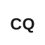

Experience
- Built an end-to-end motion side-channel attack recovering the PIN entered in a sample app from the phone’s own haptic feedback, since each keypress vibration perturbs the accelerometer and gyroscope, sensors readable without any app-granted permission.
- Injected a Frida gadget into the live app process to timestamp every tap and collected motion traces in the background through a buffered SensorEventListener service, labelling the sensor window just before and after each press to build precisely aligned per-digit datasets.
- Benchmarked logistic regression, decision tree, random forest, and SVM in MLflow, with random forest performing best at ~70% per digit on per-device models, and shipped the capture, training, and inference workflow as a Flask tool.
- Ran static and dynamic analysis on mobile payment applications, mapping findings to MPoC software protection requirements.
- Analyzed a published Samsung Galaxy A boot chain compromise, four chained CVEs running from a Little Kernel JPEG heap overflow through an Odin/PIT signing bypass to a Secure Monitor out-of-bounds read and arbitrary physical-to-virtual mapping, for a full secure boot bypass with TEE key extraction.
- Studied and attempted to reproduce a public iOS sandbox escape abusing the itunesstored and bookassetd daemons to write files into restricted /private/var paths.
- Supported students through office hours and guidance on coursework.
- Graded assignments and exams.

- Drove Agile/Scrum delivery for a global industrial client across Azure-based workstreams, facilitating sprint planning, standups, and retrospectives.
- Tracked releases and dependencies to keep program management, engineering, and offshore teams aligned on scope and timelines, owning Supply Chain domain releases.
- Managed L1/L2 escalation and release-tracking workflows, driving triage of production issues between support and engineering through to resolution.
- Supported a client audit by coordinating and compiling required documentation and evidence across teams to meet auditor deadlines.
- Built a VADER-based sentiment analysis module in an NLP pipeline covering tokenization, stop-word removal, stemming, then lexicon scoring.
- Used Apache Spark for data cleaning and preprocessing, and tuned the classifier against curated datasets to improve reliability.

- Wrote Python scripts to parse PDFs and extract and analyze data from financial reports.
- Automated a manual document-processing workflow for the team.
Education
GPA 3.8 / 4.0. Selected coursework:
GPA 8.8 / 10.
CVEs
Process execution requests to the OGC API accept a subscriber object, and the server calls the URLs it is given. An unauthenticated caller can point those callbacks at hosts reachable only from the server, using pygeoapi to reach internal HTTP services behind the network boundary.
The STAC FileSystemProvider resolves requested paths without confining them to the configured data directory, so traversal sequences in a request to a stac-collection resource walk outside it. On a deployment without protective middleware in front, that discloses directory contents from the host to an unauthenticated user.
Publications
A CNN-based web application reaching 90% accuracy on the ISIC dataset for melanoma, nevus, and seborrheic keratosis classification.
A CNN model reaching 88% accuracy classifying skin lesions from the ISIC dataset.